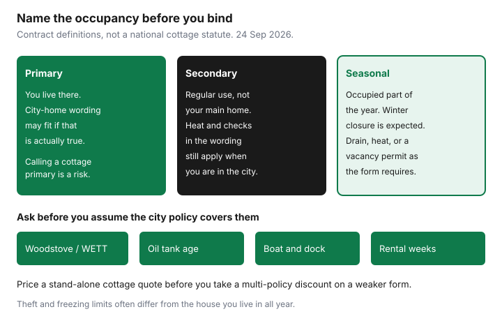

Insurance · Canada
Cottage and Seasonal Dwelling Insurance in Canada: Vacancies, Woodstoves, and Water Risks
Cottage owners get declined claims for a boring reason: they bought a city-home assumption. The house in town is heated all winter, occupied most nights, and never listed by the week. The building on the lake is empty in November, has a woodstove, an oil tank, a boat, and sometimes a cousin who “just uses it.” Those facts change eligibility, theft limits, and whether a freeze is covered. This page is the framework for a middle-aged household that owns both, or that is about to.
It is education, not a quote. Water on a city policy is already explained in the sewer and overland guides. Use those perils here only to ask whether the lake lot can even buy them.
Disclosure: Home insurance quote flows and broker quote portals are offer types. Saving Optimizer may earn a commission if we later add partner links. We do not currently claim insurer or broker partnerships. We do not sell policies. A cottage quote has to match how you actually occupy the building. Education only.
Key takeaways
- Primary, secondary, and seasonal are eligibility labels. Insuring a cottage as if you live there all year is a misrepresentation, not a savings trick.
- Read the vacant-versus-unoccupied definition and any inspection or heat warranty. Many forms restrict cover after a stated run of days. The number is in your contract, often discussed around 30 days, and it is not a national statute.
- Ask about the woodstove (a WETT inspection is a common insurer request), the oil tank’s age and type, and a separate policy for the boat. Do not assume the city home’s rules.
- Theft and freezing limits are often tighter than on a year-round house. Overland flood may be limited or unavailable at the lake.
- A week rented to friends or listed as a short-term rental has to be disclosed. Price a stand-alone cottage quote before you accept a multi-policy discount on a weaker form.
Primary vs secondary vs seasonal occupancy definitions that change eligibility
Ask the insurer which label they are applying, and get the definition in the quote. Do not borrow it from the previous owner or from a forum.
- Primary. You live there. The form expects regular occupancy, a principal-residence heat pattern, and contents consistent with daily life. Calling the cottage primary because the premium looked familiar, while your mail and your winter go to the city, is how a claim gets treated as a misrepresentation.
- Secondary. You use it regularly and it is not your main home. You may be gone for weeks. The wording still has rules for heat, unoccupancy, and theft while you are away. “We go up most weekends in summer” is not automatically secondary in winter.
- Seasonal. The building is meant to be occupied for part of the year and closed for the rest. The form may expect a winter shutdown: water drained, heat maintained, or both, exactly as written. Contents limits and theft limits are often lower. A four-season renovation does not convert a seasonal form into a primary form until the insurer agrees in writing.

If you are retiring to the cottage and the city house is the one you will sell, change the label before you change your driver’s licence address, not after a loss. The new-home checklist is the bind-before-you-need-it habit. A cottage that becomes primary is a new application, not a quiet renewal.
Vacancy clauses and inspection requirements in shoulder seasons
Policies distinguish a dwelling that is unoccupied (you are away, contents remain, you intend to return) from one that is vacant (no occupant, and often no intent to return, sometimes with contents removed). The difference matters because vandalism, glass, and water are commonly restricted once a vacancy definition is met. Many Canadian habitational wordings use a run of consecutive days, and 30 days is a figure you will see in forms and in insurer explanations. It is a contract term. Read yours. If your form says 60, 60 is the number. If it says “vacant means,” follow that sentence.
Shoulder season is when the definition bites. Late October and April are when cottages are empty, night temperatures drop, and the person who “checks on it” has not been up. If the form requires a responsible person to inspect every set number of days, or heat kept at a stated temperature, write that duty on the family calendar. A vacancy permit is the product to ask for when you will be away longer than the wording allows. It costs money and it often restricts perils. It is still cheaper than a denied freeze.
Seasonal closure, when the form allows it, usually means draining the plumbing, shutting off the pump, and either maintaining heat or relying on a wording that expects a cold closure. Do not invent a hybrid (heat off, pipes full) because a neighbour did. Ask the insurer which closure they underwrote. A smart-temperature alarm is useful only if someone will act on it. An alarm that emails a cottage with no road access in a storm is not an inspection.
Woodstove, oil tank, and watercraft add-ons commonly missed
Three add-ons are missed because they were never on the city policy.
| Item | What insurers commonly ask | What to get |
|---|---|---|
| Woodstove or fireplace insert | A current inspection by a WETT-certified technician (Wood Energy Technology Transfer, the Canadian solid-fuel certification body). Installation clearances. | The report, and the insurer’s acceptance, before heating season |
| Oil tank | Above-ground or underground, age, and condition. In Ontario, TSSA regulates fuel-oil installations. Other provinces use their own technical regulators. Insurers add their own age limits. | The age they will accept, in writing. Do not guess a universal cutoff. |
| Boat, motor, personal watercraft, dock | Home and cottage forms often cap or exclude watercraft above a length or horsepower, and docks may be limited. | A separate watercraft policy if the special limit is below the boat you own. Read the dock line too. |
A woodstove that was “grandfathered” by the previous owner is not grandfathered on your application unless this insurer says so. Disclose it. An underground tank you have not seen in years is a question for the insurer and for the provincial technical regulator, not a detail to skip because the quote was online.
Theft and water limits that differ from city home policies
Theft limits on seasonal dwellings are often lower, and theft of contents from an unoccupied building may be capped or subject to evidence of forced entry. Tools in an unlocked shed, a generator on the deck, and a boat motor in an open crib are the claims that disappoint people. Photograph them in the inventory, lock what the warranty says to lock, and schedule what exceeds the special limit.
Water is the other disappointment. A freeze because heat was off, or because pipes were not drained under a seasonal closure, is a common exclusion even when the city house has generous sudden-water cover. Sewer backup may be irrelevant at a lot with a septic system, and overland flood or ice damage at a shoreline may be unavailable or sublimited. Ask. “Not offered” on the spreadsheet is an honest cell. Pretending the city overland endorsement follows you to the lake is not. The overland flood guide explains the peril. It does not promise a lake lot can buy it.
Liability matters when guests swim, when a dock fails, or when a path crosses to the water. Match the liability limit to the city policy unless you have a reason to carry less, and ask whether the cottage form covers the dock and the waterfront the way you use them.
Rental weeks to friends/STR: disclosure that prevents voided claims
Lending the cottage to a sibling for a week is not the same fact as listing it on a short-term rental platform, and neither fact should be a surprise to the insurer. Occasional use by family is often within a homeowner or seasonal form. Rent, even “just to cover the taxes,” can be a commercial use the form excludes, or a use that needs an endorsement and a liability limit aimed at guests.
Disclose it before the first paid or platform week. An undisclosed rental can be treated as a material change in risk. Claims are denied on that basis often enough that the email is the cheap part. Ask what is allowed: how many weeks, whether a platform counts, whether you must be on site, and whether contents belonging to guests are covered (usually they are not; guests need their own coverage). Get the answer on the policy or in a written endorsement, not in a text from the person who sold you the quote.
If you stop renting, tell them that too. A permission you no longer use can still affect price, and a permission you have outgrown can leave you outside the grant. Friends who chip in for propane are a question worth one sentence in the email so you are not guessing later whether that was “rent.”
Bundle with primary home only after comparing stand-alone cottage quotes
A multi-policy discount for placing the cottage with the city home is a real dollar amount and a weak reason to accept the wrong form. Price three structures on the same limits, using the spreadsheet: cottage stand-alone, city home stand-alone, and both together. Add the rows. If the bundle is cheaper and the cottage form still matches seasonal closure, the woodstove, and your rental answer, take the bundle. If the bundle is cheaper because the cottage form deleted freeze cover or capped theft at a figure below the boatshed, it is the price-war problem on the renewal page. Reject it.
Consumer explainers often cite about 5 to 15 percent for multi-policy discounts. That is not your cottage. The bundle worksheet and the loyalty guide show how to put the discount back into the comparison so a sticker cannot hide a bad form. Broker and home quote flows can collect the stand-alone number. You still read the occupancy definition before you bind.
Review the cottage at the same annual sitting as the city house, with a separate row. Shoulder season is a good alarm on the calendar even if the policy renews in June. The inspection duty does not wait for the renewal month.
Sources & date stamps
- Occupancy, vacancy, and unoccupancy definitions are contractual. A 30-day figure appears in many Canadian habitational wordings and insurer explanations. It is not stated here as a statute. Read the form. Used 24 Sep 2026.
- WETT (Wood Energy Technology Transfer) certifies solid-fuel technicians in Canada. Insurers commonly ask for a WETT inspection on woodstoves. Product norm, not a coverage grant.
- TSSA regulates fuel-oil installations in Ontario. Other provinces use their own regulators. Insurer tank-age limits vary. No universal age is stated.
- IBC and insurer consumer explanations treat sewer backup and overland flood as typically optional, and seasonal properties as differently occupied. Confirm the lot. Used 24 Sep 2026.
- Financial Consumer Agency of Canada, get insurance: disclose material facts and compare coverage with price. Used 24 Sep 2026.
Frequently asked questions
Is a cottage insured like my city house?
Only if you live there and the insurer has accepted it as a primary home. Secondary and seasonal forms change heat, theft, vacancy, and closure rules. Use the definition on the quote, not the city declarations.
How long can a cottage sit empty?
Read the vacant and unoccupied definitions. Many Canadian forms restrict certain perils after a stated number of consecutive days, and 30 days is a common contract figure, not a national law. If you will be away longer, ask about a vacancy permit or a seasonal closure.
Do I need a WETT inspection for a woodstove?
Insurers commonly ask for one before they will cover a solid-fuel appliance. Get the insurer’s answer in writing, and keep the report. This is a product requirement you should expect, not a statute quoted on this page.
Can I rent the cottage for a week without telling the insurer?
No. Disclose family weeks if you are unsure, and always disclose paid or platform rentals. An undisclosed rental can be a material change in risk and a reason a claim is denied. Get the permission on the policy.
Should I bundle the cottage with my home insurance?
Only after a stand-alone cottage quote on the same limits. A multi-policy discount is useful when the form still matches occupancy, heat, and rental. A discount on a weaker form is not a saving.